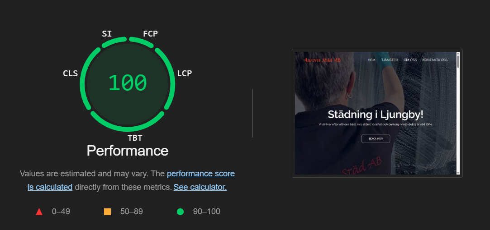

Kundcase
Modern och effektiv hemsida för Aurora Städ som lyfter fram kvalitet och professionalism inom städbranschen, med fokus på att nå en utökad kundbas
Vårt Uppdrag
Aurora Städ AB är ett städbolag med en lång och stolt tradition av att leverera förstklassig städning. Företaget grundades 2010 av Zorica Pranjic, som har över 25 års erfarenhet inom städbranschen. Aurora Städs fokus ligger på att erbjuda kvalitet över kvantitet, där varje uppdrag utförs med noggrannhet och omtanke. De strävar efter att överträffa kundernas förväntningar genom ett starkt engagemang för både kompetens och tydlig kommunikation. Teamet består av skickliga och erfarna medarbetare som värdesätter en öppen och ärlig dialog med kunderna för att säkerställa att deras behov och önskemål alltid möts.
Aurora Städ var vår första kund, och vårt uppdrag var att öka deras kundbas genom en strategisk satsning på SEO och driva fler klick till deras hemsida. Vi utvecklade en ny design för hemsidan som speglar företagets professionalism och långa erfarenhet. Med en stilren och användarvänlig layout, tydliga menyer och en inbjudande startsida, gör vi det enkelt för potentiella kunder att hitta information om tjänsterna och kontakta Aurora Städ. Genom att optimera hemsidan för sökmotorer och lyfta fram deras unika kompetens och värderingar, har vi stärkt deras digitala närvaro och byggt förtroende hos både nya och befintliga kunder.
- SEO-optimerad hemsida
- Tydlig information
- Enkel och tydlig CTA
- Användarvänlig


Tekniska lösningen
Vår approach till att utveckla Aurora Städ AB:s nya hemsida startade med en djupdykning i olika tekniska möjligheter. Vi funderade först på att använda plattformar som Webflow eller mer traditionella kodningsmetoder, men efter att ha analyserat Zorica Pranjics vision och de unika krav som ställdes på hemsidan bestämde vi oss för att bygga den från grunden med HTML, CSS och JavaScript. Detta val gav oss friheten att skapa en helt anpassad lösning som perfekt matchade Aurora Städs identitet och de praktiska behov som en städtjänstsida har i dagens digitala landskap.
Arbetet kickade igång med att vi skissade upp en första version av hemsidan – en slags digital ritning som blev startpunkten för vårt samarbete med Zorica. Tillsammans gick vi igenom allt från sidans struktur till hur tjänsterna skulle visas upp och hur kunder enkelt kunde ta kontakt. Med hennes input tweakade vi designen steg för steg, testade olika färgscheman och experimenterade med menyerna – vi gick från en meny med dropdown-funktion till en rakare, mer avskalad variant för att maximera användarvänligheten. För att få in Aurora Städs logotyper i designen samarbetade vi med lokala kontakter som hjälpte oss att säkra rätt material. Genom att analysera och justera längs vägen landade vi till slut i en färdig hemsida som både vi och Zorica kände oss stolta över.
Resultat
Slutresultatet blev en snygg, intuitiv och tekniskt stabil hemsida som lyfter fram Aurora Städ AB:s professionalitet och gör det smidigt för kunder att utforska tjänster och ta kontakt. Hemsidan uppfyllde också våra mål i Google Lighthouse, vilket garanterar en högkvalitativ prestanda och snabba laddningstider för en riktigt bra användarupplevelse.
Om Aurora Städ
Aurora Städ är ett städbolag med en lång och stolt tradition av att leverera förstklassig städning. Företaget grundades av Zorica Pranjic 2010 och bygger på över 25 års erfarenhet inom städbranschen. Deras främsta fokus är att erbjuda kvalitet över kvantitet – dem strävar alltid efter att överträffa deras kunders förväntningar genom noggrannhet och omtanke.